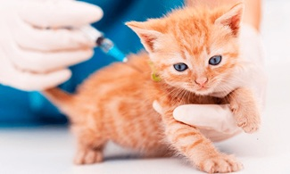
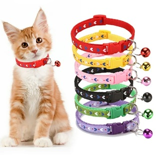
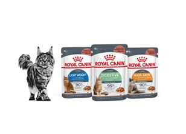

Sin importar si eres papá o mamá perruna o gatuna, como responsable de tus mascotas siempre buscarás hacer todo para cuidar de ellas. Esta tarea implica algunas actividades diarias regulares para garantizar que se mantengan felices y saludables. Llevar una nueva mascota al hogar puede ser tan intimidante como emocionante. Incluso si anteriormente tuviste algún peludito en casa, esta decisión puede dar lugar a muchas preguntas. Sin embargo, estamos seguros de que los siguientes consejos te ayudarán.
Consejos para cuidar a tus mascotas en casa
Visitas al veterinario
Tener una mascota de manera responsable comienza con visitas regulares al veterinario. Deberían hacerse un chequeo una o dos veces al año. El establecer y mantener la buena salud de tu mascota significa mantenerse al día con las visitas al veterinario a medida que envejecen.
Consejo: antes de salir hacia el veterinario, sácalos de paseo. Esto se hace para que no asocien entrar al auto con ir al veterinario.
Proporciona un entorno de vida seguro, cómodo y enriquecedor
Así como los seres humanos necesitamos un hogar en el que podamos sentirnos cómodos y seguros, también lo necesitan nuestras mascotas. Limpiar regularmente los ambientes de nuestro hogar asegura que no se acumulen polvo y pelusas entre otras cosas, que pueden perjudicar la salud de nuestros animales y más tarde la nuestra propia. Lavar las zonas donde nuestras mascotas frecuentan los sillones y sábanas es my recomendable.
Consejo: las mascotas que son demasiado jóvenes o ya tienen varios años pierden su capacidad para regular la temperatura corporal eficientemente. Es importante ofrecerles una manta y una cama que les proporcione confort y calor. Sobre todo en las horas de la noche.
Atiende sus necesidades nutricionales

Todos los organismos vivos necesita,os alimento para sobrevivir. Lamentablemente, muchas mascotas sufren de obesidad y otros problemas metabólicos por mala alimentación. Lo que más adelante se puede derivar en otros problemas de salud.
Si bien existe un debate sobre qué comida es más apropiada, hay un consenso al respecto. Todos necesitan un buen equilibrio de proteínas, grasas saludables, carbohidratos y mucha agua. Estos deben administrarse en las cantidades adecuadas y también en sus proporciones correctas.
Consejo: selecciona una fórmula de alimento para mascotas que sea apropiada para su edad, sus condiciones de salud y el nivel de actividad de tu mascota.
Esteriliza a tu mascota
Esterilizar a tu mascota evita una serie de problemas de salud, incluídos embarazos complicados y ayuda a la reducción de animales sin hogar. Debido a que la esterilización o castración es una cirugía que requiere anestesia general, es probable que tu mascota pase la noche en el consultorio del veterinario. Esto, durante al menos una noche para observación y recuperación.
Consejos: trata de practicar este procedimiento en una edad temprana para tu peludito. De esta manera su recuperación y su proceso de cicatrización será rápida.
Aplica las vacunas a tiempo
Poco después de llegar a tu hogar, la primera salida debe ser al veterinario. Acto seguido se establecerá un calendario de vacunación para tu pequeño cachorro o gatito. Esto, con el objetivo de protegerlos de enfermedades como la rabia o el moquillo en el caso de los perros. Los gatos también se benefician de las vacunas que previenen el virus del herpes felino, la leucemia felina y la rabia.
Consejo: si adoptaste una mascota en edad avanzada, asegúrate de que también esté protegido. Las vacunas necesitan renovación y no son solo para mascotas jóvenes.
Entrenamiento como bienestar
Uno de los aspectos más importantes del cuidado responsable de las mascotas es asegurarse de que tu perro o gato tenga un entrenamiento adecuado. Enseñarles a ir al baño es la prioridad número uno. Al igual que trabajar en el entrenamiento de órdenes mínimas de obediencia. Una mascota bien entrenada es una mascota feliz, y eso se traduce en un padre feliz.
Consejo: el entrenamiento basado en recompensas arroja excelentes resultados. Puedes incluir algunos snacks que ayuden a reforzar su comportamiento positivo.
Busca juguetes seguros
Desecha y reemplaza los juguetes que estén gastados. Los juguetes chillones pueden proporcionar mucho entretenimiento para tu perro. Es importante que el dispositivo que proporciona el sonido no se pueda arrancar del juguete. Este objeto puede ser ingerido fácilmente, causando que termines por visitar el veterinario. Asimismo, no olvides eliminar los juguetes con partes sueltas que puedan presentar peligro de asfixia y bordes duros o afilados que podrían causar lesiones.
Consejo: Evita los juguetes demasiado pequeños, estos pueden tragarse fácilmente o alojarse en la garganta. Los juguetes de peluche son buenos para varios propósitos. En ocasiones suelen ser de gran utilidad para incluirlos como recompensa en un esquema de entrenamiento; sin embargo, estos deben utilizarse con precaución.
Limpia sus patas regularmente
Las patas de tu mascota son una de las partes más vulnerables de su cuerpo. Si no se cuidan adecuadamente, pueden agrietarse, lesionarse o sangrar fácilmente. Lo que provoca una gran incomodidad y dificultad para caminar. Igualmente, se encuentran expuestos a bacterias presentes en los desechos de otras mascotas que no son vacunadas o purgadas regularmente.
Consejo: puedes utilizar para esta tarea pañitos húmedos especiales para mascotas sin alcohol. De igual manera te recomendamos usar agua y un champú especial para su piel y pelaje.
Lavado de dientes

Al igual que las personas, tus mascotas pueden sufrir al no tener una limpieza dental regular. Para esta tarea puedes usar cepillos de dientes y crema dental especiales para mascotas. Cepillar sus dientes con regularidad es la forma principal de eliminar la placa suave, antes de que se convierta en cálculo mineralizado. El hábito de limpiar los dientes evita cosas tales como el mal aliento, al tiempo que ayuda a prevenir otras enfermedades.
Consejo: puedes proporcionarles golosinas y juguetes dentales que ayudarán de manera preventiva y de mantenimiento con esta tarea.
Entregarles todo tu amor
Sabemos que está de más decirlo. Sin embargo, no sobra para nada recordarte cómo todas las mascotas realmente quieren que las acaricien sin tregua. Les encanta el cariño, la calidez y las sonrisas. Dale especial atención a tu mascota y ellos le brindarán en retorno a tu familia un amor incondicional que solo una mascota puede entregar.
Consejo: prestarles atención y jugar con ellos cada vez que puedas, suma puntos extra en su corazón.
Alimentos
La nutrición de nuestras mascotas ha cambiado mucho a lo largo de los últimos años. Ha evolucionado desde un punto de vista práctico, pero fundamentalmente como una nutrición más completa y equilibrada, ya que las empresas comprometidas con la alimentación de los perros y los gatos han ido elaborando alimentos cada vez más apropiados según sus necesidades.
Cada vez se les ofrece menos comida casera gracias a la concienciación que han hecho las marcas de alimento industrial y los veterinarios implicados seriamente en el tema. Ahora bien, el mercado de los alimentos para mascotas está lleno de ofertas, por lo que la elección puede ser muy compleja debido a la variedad que existe en cuanto a calidad y precio, es ahí donde el asesor nutricional juega un papel importantísimo.
Hoy en día está claramente comprobado que la alimentación desempeña un papel fundamental en la prevención y manejo de enfermedades, por eso mismo los cuidadores también se implican más al momento de elegir la comida para sus animales de compañía.
Royal Canin es una de las mejores marcas de alimentos para animales, la cual asegura una calidad y frescura sin igual. Ofrece una variedad de alimentos bien nutridos para cada una de las edades y tamaños de tus mascotas, priorizando siempre su bienestar intestinal. Ayuda a nutrir su pelaje y mantener a tu mascota siempre en forma con los nutrientes que necesita, ya sea para animales pequeño, medianos o grandes, Royal Canin tiene el elimento que buscas al mejor precio y con promociones accesibles para cada dueño. Pregunta en tu veterinaria amiga por estos exquisitos alimentos.

Alimentos para gatos
Veterinarias
Mantener un contacto regular con nuestro veterinario cercano es una de las estrategias más importantes a tener en cuenta al momento te adquirir una mascota, no olvides preguntar por los cuidados especiales que cada animalito necesita e informarte de todos los detalles que desconozcas de tu mascota. Siempre podrás consultar en los servicios de ubicación por una veterinaria cerca de casa.
Dichas visitas permiten la detección temprana de problemas, la prevención de enfermedades mediante vacunas y desparasitación, y la obtención de asesoramiento profesional sobre nutrición, ejercicio y comportamiento. La frecuencia de las visitas depende de la edad, estado de salud y estilo de vida del animal, pero como regla general, los cachorros y gatitos requieren visitas más frecuentes, los adultos sanos anualmente, y los animales mayores o con enfermedades crónicas cada seis meses o según indique el veterinario.
Tener animales de compañía es una de las mejores decisiones que puedes tomar. Anímate y revisa la opción de adoptar, de esta manera estarás realizando una acción solidaria que sirve para reducir el abandono animal. Al tener un peludito en tu vida, puedes descubrir tu pasión por los animales. De seguro terminarás por convertirte en un cuidador genial de los miembros más divertidos y amorosos en una familia.